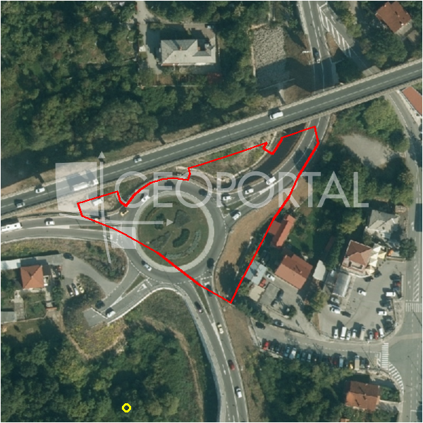

#2658 · MATULJI - Građevinsko zemljište za objekt poslovne namjene, 4550 m2
Matulji, Matulji, Primorsko-goranska · zemljiste · njuskalo · status active · oglas ↗
Ocjena
- Score
- 61 rule 61 · LLM – · 12.09.2026.
- RLV
- 2,68 M€ (673 €/m²) · ratio 2,95
- Ukupna investicija
- 8,32 M€
- GBP
- 2.872 m²
- Feedback
- –
- CRM
- –
Sažetak: Prodaje se građevinsko zemljište za poslovnu namjenu od 4.550 m2 u Matuljima, u izdvojenom građevinskom području gospodarske namjene izvan naselja namijenjenom trgovačkim, uslužnim, servisnim i obrtničkim sadržajima. Oglas ne navodi konkretnu dozvolu, zonski kod, koeficijente niti pristupni put, a detalje agencija dostavlja na upit.
Oglas
- Cijena
- 910.000 € (200 €/m²)
- Površina
- 4.550 m² · DKP 3.989 m² (odstupanje -12,3 %)
- Prodavatelj
- agencija · Manor nekretnine
- Prvi put
- 11.09.2026. · zadnje 11.09.2026. · 0 d na tržištu
Povijest cijene
| Datum | Cijena |
|---|---|
| 11.09.2026. | 910.000 € |
Flagovi
zop_70_100 ZOP pojas 70/100 m (−10)zone_uncertainty zona nije pregledana (reviewed: false) (−5)
parcelacija fazni projekt / parcelacija
zona_iz_oglasa zona preuzeta iz teksta oglasa (bez GIS-a)
llm_pending LLM ekstrakcija/ocjena nedostupna
Komponente score-a
| rlv | {'gbp': 2872.0584, 'kis': 0.8, 'nkp': 2154.0438, 'noi': None, 'rlv': 2684438.063217392, 'ratio': 2.94993193760153, 'value': None, 'phases': 2, 'profile': 'obala_visestambeno', 'gdv_neto': 12062645.28, 'cost_soft': 574411.68, 'gdv_bruto': 15078306.6, 'kis_known': False, 'total_inv': 8317069.504, 'cost_build': 5744116.8, 'cost_other': 1033941.024, 'cost_sales': 452349.198, 'demolition': False, 'gbp_source': 'kis', 'rlv_per_m2': 672.9652173913046, 'parcel_area': 3988.97, 'parcelation': True, 'roi_on_cost': 0.39595996840187037, 'profit_at_ask': 3293226.5779999997, 'cost_demolition': 0.0, 'total_inv_phase': 4640834.752, 'parcel_area_effective': 3590.073, 'sale_price_per_m2_nkp': 7000.0} |
| hard | [] |
| info | ['parcelacija', 'zona_iz_oglasa', 'llm_pending'] |
| rubric | {'permits': {'max': 5.0, 'detail': {'permit': 'none'}, 'points': 0.0}, 'location': {'max': 15.0, 'detail': {'source': 'rlv.yaml:pgz_opatija/row1', 'sale_price_per_m2_nkp': 7000.0}, 'points': 15.0}, 'physical': {'max': 4.0, 'detail': {'slope_pct': 14.26, 'road_access': 'yes', 'slope_points': 1.574, 'sea_row1_bonus': True}, 'points': 4.0}, 'liquidity': {'max': 3.0, 'detail': {'n_cuts': 0, 'points_cut': 0.0, 'points_days': 0.008333333333333333, 'seller_type': 'agencija', 'points_fresh': 0.5, 'price_cut_pct': None, 'days_on_market': 1, 'points_private': 0}, 'points': 0.51}, 'rlv_ratio': {'max': 25.0, 'detail': {'rlv': 2684438, 'ratio': 2.95, 'asking_price': 910000.0}, 'points': 25.0}, 'ticket_fit': {'max': 10.0, 'detail': {'asking_price': 910000.0}, 'points': 10.0}, 'zone_quality': {'max': 8.0, 'detail': {'source': 'oglas', 'zone_ok': True, 'zone_class': 'poslovno'}, 'points': 1.0}, 'profit_potential': {'max': 20.0, 'detail': {'roi_on_cost': 0.396, 'profit_at_ask': 3293227}, 'points': 20.0}, 'price_vs_benchmark': {'max': 10.0, 'detail': {'source': 'auto:Matulji', 'deviation': -0.491, 'ask_eur_m2': 200, 'benchmark_eur_m2': 134.17}, 'points': 0.0}} |
| weights | {'llm': 0.4, 'rule': 0.6, 'model': 0.0} |
| penalties | {'zop_70_100': 10, 'zone_uncertainty': 5} |
| raw_score | 75,5 |
| rlv_notes | ['parcelacija: > 2500 m² → fazni projekt, −10 % površine, +5 % soft', 'fazni projekt: 2 faze; investicija prve faze 4,640,835 €'] |
| flag_notes | {'phases': 2, 'max_gbp': 2872, 'zop_band': '70', 'total_inv': 8317070, 'zone_code': 'gospodarska - poslovna namjena', 'zone_class': 'poslovno', 'zone_source': 'oglas', 'zone_reviewed': None, 'total_inv_phase': 4640835} |
| caps_applied | [] |
GIS
- Čestica
- k.o. 319961, k.č. 2406/1 (pin_buffer, 0,74); k.o. 320170, k.č. 17/1 (pin_buffer, 0,62); k.o. 320170, k.č. 7/1 (pin_buffer, 0,56)
- Zona
- gospodarska - poslovna namjena (–)
- kig / kis / katnost
- – / – / –
- GP / UPU
- – · UPU –
- Pristup / nagib
- yes · 14,3 % (max 32,8 %)
- More
- 22 m · red 1 · ZOP 70
- Zaštite
- Natura ne · zaštićeno ne · kulturno dobro ne
- Zgrade na čestici
- 0 %
- Match
- 0,74
Karta
Ortofoto (DOF)

RLV kalkulacija — pretpostavke
| gbp | {'value': 2872.0584, 'source': 'kis'} |
| kis | {'value': 0.8, 'source': 'default_profila'} |
| sea_row | {'value': '1', 'source': 'gis'} |
| soft_pct | {'value': 0.1, 'source': 'profil+parcelacija'} |
| nkp_ratio | {'value': 0.75, 'source': 'profil'} |
| cost_other | {'value': 1033941.024, 'source': 'profil: doprinosi+uređenje po m² GBP, financiranje+rezerva % gradnje'} |
| parcel_area | {'value': 3988.97, 'source': 'dkp'} |
| asking_price | {'value': 910000.0, 'source': 'oglas'} |
| margin_on_cost | {'value': 0.15, 'source': 'profil'} |
| build_cost_per_m2_gbp | {'value': 2000.0, 'source': 'profil'} |
| sale_price_per_m2_nkp | {'value': 7000.0, 'source': 'rlv.yaml:pgz_opatija/row1'} |
| transfer_tax_and_acquisition | {'value': 0.06, 'source': 'profil'} |
Ekstrakcija iz oglasa
| permit | none |
| zone_claim | gospodarska - poslovna namjena |
| sea_row_claim | none |
Benchmarks mikrolokacije
| Vrsta | Vrijednost | n | Od | Izvor |
|---|---|---|---|---|
| land_ask_eur_m2 | 134 | 254 | 11.09.2026. | auto |
Opis oglasa
Manor predstavlja građevinsko zemljište smješteno u Matuljima, u sklopu izdvojenog građevinskog područja gospodarske namjene izvan naselja, a u kojem je sukladno prostorno planskim aktima na snazi predviđena izgradnja građevina gospodarskih - poslovnih djelatnosti, to jest organizaciji trgovačkih, uslužnih, servisnih i obrtničkih sadržaja. Zemljište je površine 4500 m2. Detaljnije informacije o nekretnini dostavljamo na upit. ID KOD AGENCIJE: 134-36 MANOR NEKRETNINE d.o.o. Mob: +385 99 365 7230 Tel: +385 51 504 909 E-mail: info@manor.hr www.manor.hr